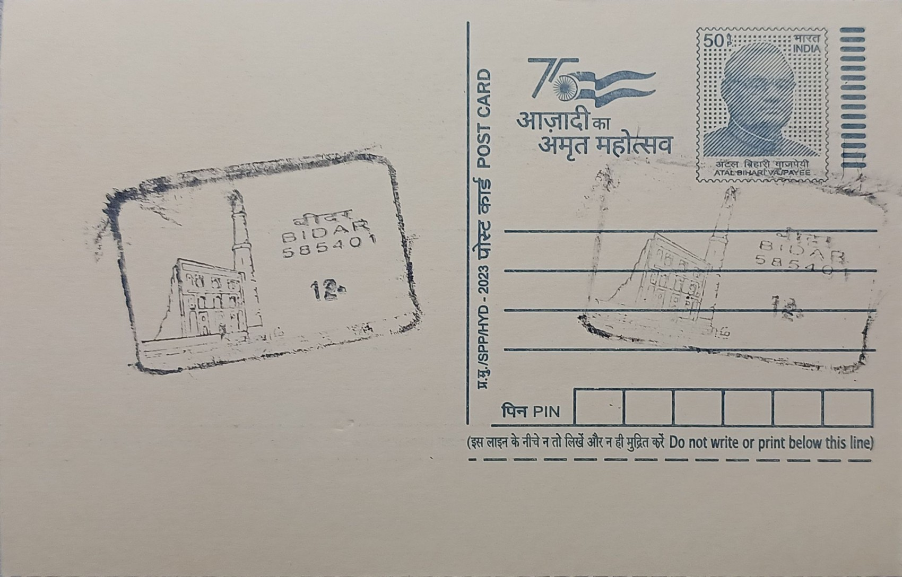

Madrasa of Mohammed Gawan
ಮಹಮ್ಮದ್ ಗವಾನ್ನ ಮದರಸಾ


The madrasa at Bidar takes its name directly from its founder, Khwaja Mahmud Gawan, a Persian-born merchant from Gilan on the Caspian coast who rose through trade and diplomacy to become prime minister, or wakil-us-sultanat, of the Bahmani Sultanate under Muhammad Shah III Lashkari. Completed around 876 AH, corresponding to 1471-72 CE, the building was conceived not as a royal commission but as the personal endowment of a statesman devoted to scholarship, and it has carried his name ever since rather than that of any ruling sultan, an unusual distinction among Deccan monuments of the period.
As an institution, the madrasa belongs to the broader tradition of Islamic higher learning that spread across the medieval world, and within the Deccan it is considered among the most significant surviving examples of that tradition. Its curriculum extended well beyond theology and jurisprudence to include logic, mathematics, medicine, and astronomy, and its library is said to have held more than three thousand manuscripts, drawing scholars and students from Persia, Central Asia, and the wider Islamic world. This cosmopolitan reach gave Bahmani Bidar a reputation as a centre of learning comparable to contemporary institutions in Cairo, Samarkand, and Herat, and the madrasa today is protected as a monument of national importance under the Archaeological Survey of India.
Gawan raised an imposing three-storey structure arranged around a central courtyard, with an iwan flanked by student cells, staff quarters, lecture halls, and a mosque, the residential cells notably rising in three tiers rather than the two typical of madrasas elsewhere in the Islamic world. The eastern facade was originally framed by towering minarets reaching close to a hundred feet, faced in glazed tilework imported from Persia, and the craftsmen themselves are believed to have been brought from Gawan's native Gilan. The surviving tiles show a zigzag banding of blue, white, and green at the base of the remaining minaret, with floral medallions and Quranic inscriptions in tile mosaic running across the upper facade, a decorative vocabulary drawn directly from contemporary Timurid Persian buildings rather than from earlier Deccani practice.
The building's near-destruction came well after Gawan's own lifetime: in 1656, during Mughal campaigns in the Deccan under Aurangzeb, the madrasa was seized and converted into a military garrison, with gunpowder stored in chambers near its southeastern minaret. An explosion in the magazine tore away roughly a quarter of the structure, destroying one of the two corner minarets entirely and badly damaging the entrance facade and adjoining halls, a blow from which the building never fully recovered architecturally even though its remaining walls and single surviving minaret still convey the scale of the original design.
Today only one of the original twin minarets stands to its full height, visible from much of Bidar's old city, while the rest of the complex survives as a roofless shell of courtyards, cells, and tile-faced walls maintained by the Archaeological Survey of India's Bidar circle, which has carried out periodic conservation of the exposed tilework and masonry. The site is included within the wider Bidar Fort heritage zone alongside monuments such as the Rangin Mahal and Takht Mahal, and it draws both historians of Islamic architecture and general visitors who come primarily for its tilework and its place in the story of Bahmani-era learning. Gawan himself was executed in 1481 on charges of treason fabricated by rivals at court, but the institution he endowed has outlasted the intrigue that ended his life, standing now under state protection as one of Karnataka's designated heritage sites open to the public.
| Date of Introduction | December 11, 2005 |
|---|---|
| Address | Senior Postmaster, |
| Bidar HO, | |
| Bidar (dt.), Karnataka - 585401. |